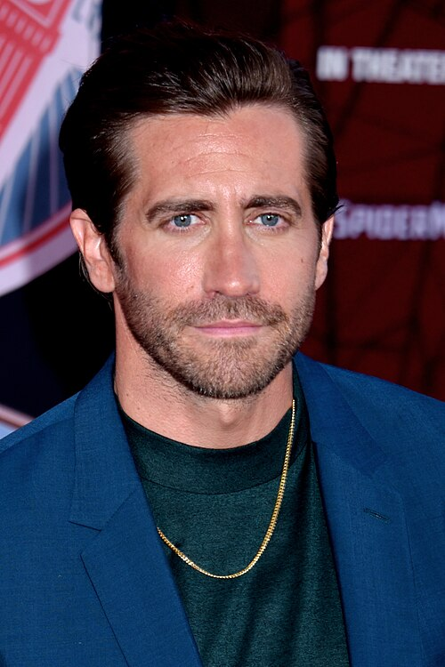

Jake Gyllenhaal
|
 |
|
| Nome completo | Jacob Benjamin Gyllenhaal |
|---|---|
| Nascimento | 19 de dezembro de 1980 (45 anos) Los Angeles, Califórnia, EUA |
| Nacionalidade | Norte-americana |
| Ocupação | Ator e produtor |
| Anos em atividade | 1991 - presente |
| Parentes | Maggie Gyllenhaal (irmã) |
| Pais | Stephen Gyllenhaal e Naomi Foner |
Jacob Benjamin "Jake" Gyllenhaal (Los Angeles, 19 de dezembro de 1980) é um ator e produtor norte-americano. Filho do diretor Stephen Gyllenhaal e da roteirista Naomi Foner, cresceu em meio ao cinema e estreou ainda criança, em Cidade Grande (1991). Tornou-se conhecido do grande público com Donnie Darko (2001) e consolidou a carreira com papéis dramáticos intensos.
Foi indicado ao Oscar de Melhor Ator Coadjuvante por O Segredo de Brokeback Mountain (2005). Desde então, alterna produções de grande bilheteria, filmes independentes e peças de teatro, sendo reconhecido pela transformação física e emocional que costuma impor aos personagens.
Início de vida
Jake nasceu em Los Angeles, filho de uma família ligada ao audiovisual. Seu pai, Stephen Gyllenhaal, é diretor, e sua mãe, Naomi Foner, é roteirista. Sua irmã mais velha, Maggie Gyllenhaal, também é atriz. Ele estudou na Harvard-Westlake School e, depois, na Universidade Columbia, em Nova York, que deixou para se dedicar à carreira.
Carreira
Década de 1990
Depois de pequenas participações, ganhou destaque em Menino do Céu (October Sky, 1999), no papel de um jovem que sonha em construir foguetes.
Década de 2000
Em Donnie Darko (2001), interpretou um adolescente perturbado por visões, filme que virou um clássico cult. Seguiram-se O Dia Depois de Amanhã (2004), Soldado Anônimo (2005) e, no mesmo ano, O Segredo de Brokeback Mountain, que lhe rendeu a indicação ao Oscar e o prêmio BAFTA de Melhor Ator Coadjuvante. Em 2007, atuou em Zodíaco, de David Fincher.
Década de 2010
Participou de Príncipe da Pérsia: As Areias do Tempo (2010), Contra o Tempo (2011) e Marcados para Morrer (2012). Em Os Suspeitos (2013) e O Abutre (2014), entregou algumas das atuações mais elogiadas da carreira. Também atuou em Lutador (2015), Evereste (2015) e Animais Noturnos (2016). Em 2019, interpretou Mysterio em Homem-Aranha: Longe de Casa.
Teatro e televisão
No palco, Jake atuou em Constellations (2014), Sunday in the Park with George (2017) e Sea Wall/A Life (2020). Na televisão, estrelou a série Acusação de Culpa (Presumed Innocent, 2024).
Filmografia selecionada
| Ano | Título (Brasil) | Papel |
|---|---|---|
| 1999 | Menino do Céu | Homer Hickam |
| 2001 | Donnie Darko | Donnie Darko |
| 2004 | O Dia Depois de Amanhã | Sam Hall |
| 2005 | O Segredo de Brokeback Mountain | Jack Twist |
| 2007 | Zodíaco | Robert Graysmith |
| 2013 | Os Suspeitos | Detetive Loki |
| 2014 | O Abutre | Louis Bloom |
| 2015 | Lutador | Billy Hope |
| 2016 | Animais Noturnos | Edward Sheffield / Tony Hastings |
| 2019 | Homem-Aranha: Longe de Casa | Quentin Beck / Mysterio |
Reconhecimento
Entre os principais reconhecimentos, destacam-se a indicação ao Oscar e a vitória no BAFTA, ambos por O Segredo de Brokeback Mountain. Ele também recebeu indicações ao Globo de Ouro e a prêmios de associações de críticos ao longo da carreira.
Para saber mais detalhes sobre a vida do ator, acesse a página Vida e carreira.